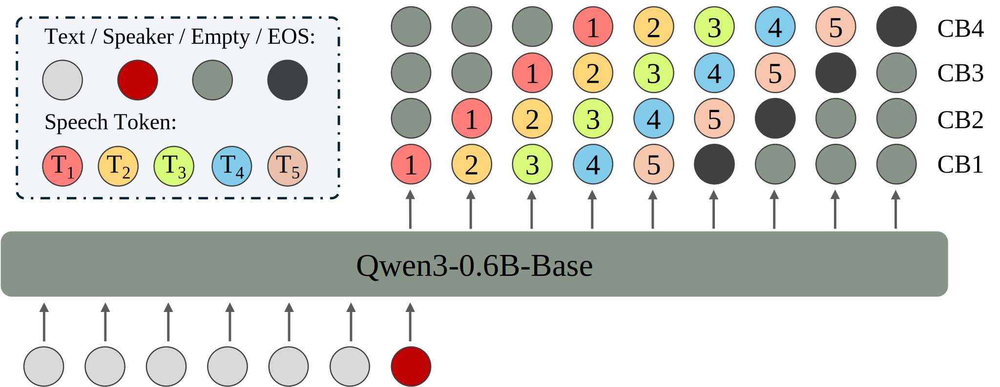

VoiceCraft-X
Unifying Multilingual, Voice-Cloning Speech Synthesis and Speech Editing
Abstract. We introduce VoiceCraft-X, an autoregressive neural codec language model which unifies multilingual speech editing and zero-shot Text-to-Speech (TTS) synthesis across 11 languages: English, Mandarin, Korean, Japanese, Spanish, French, German, Dutch, Italian, Portuguese, and Polish. VoiceCraft-X utilizes the Qwen3 large language model for phoneme-free cross-lingual text processing and a novel token reordering mechanism with time-aligned text and speech tokens to handle both tasks as a single sequence generation problem. The model generates high-quality, natural-sounding speech, seamlessly creating new audio or editing existing recordings within one framework. VoiceCraft-X shows robust performance in diverse linguistic settings, even with limited per-language data, underscoring the power of unified autoregressive approaches for advancing complex, real-world multilingual speech applications.
Contents
Zero-shot TTS Samples
| Prompt Transcription | Target Transcription | Prompt | VoiceCraft-X | XTTS-v2 | VoiceCraft | Ground Truth |
|---|---|---|---|---|---|---|
| It is located on a small plain home to many vineyards. | The society of the day held that reward without labour was misguided. | |||||
| Two children, one male and one female are practicing outdoor rock climbing. | Soldier sitting on top of Jeep holding a machine gun and soldier sitting inside. | |||||
| Together with his wife he had three daughters. | He was born to an illustrious family that produced notable people in several fields. | |||||
| The facade is constructed from white Portland stone and red brick. | After a routine departure, the airliner experiences sporadic sudden vibrations. | |||||
| I would have won the Junior Olympics if not for those medaling kids. | Looking through the telescope, I saw a circle of deep blue and the little round planet. | |||||
| "There's no danger," the boy said, when they had moved on past the encampment. | Later, we simply let life proceed, in its own direction, toward its own fate. | |||||
| Audrey is the stereotypical housewife. | This paper discusses the power of the Senate to try impeachment cases. | |||||
| It is well connected by road and rail to Bangalore, Mangalore and Mysore. | Critics have taken Roney to task for sounding too similar to his idol. | |||||
| This marked the official beginning of the university as it is today. | Fox won her next seven fights in a row, with two knockouts. | |||||
| When a certain length of time passes, he heads for the palace. | The village is also the birthplace of the actor John Mills. |
| Prompt Transcription | Target Transcription | Prompt | VoiceCraft-X | XTTS-v1 | XTTS-v2 | Ground Truth |
|---|---|---|---|---|---|---|
| 柏林围墙崩垮后，德国企业在俄国大笔投资。 | 本次有害昆虫科普展，是一场专门为孩子准备的科普教育活动。 |
Speech Editing Samples
| Prompt Transcription | Target Transcription | Prompt | VoiceCraft-X | VoiceCraft | Ground Truth | |
|---|---|---|---|---|---|---|
| It is located on a small plain home to many vineyards. | The society of the day held that reward without labour was misguided. |
| Prompt Transcription | Target Transcription | Prompt | VoiceCraft-X | XTTS-v1 | XTTS-v2 | Ground Truth |
|---|---|---|---|---|---|---|
| 柏林围墙崩垮后，德国企业在俄国大笔投资。 | 本次有害昆虫科普展，是一场专门为孩子准备的科普教育活动。 |
System Overview

Figure 1. The training process for the VoiceCraft-X model, which takes text and a speaker embedding as input and is trained to predict sequences of speech tokens. The labels CB1-CB4 represent codec tokens from different codebooks.